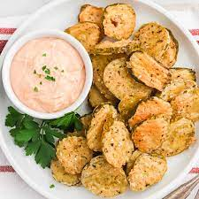
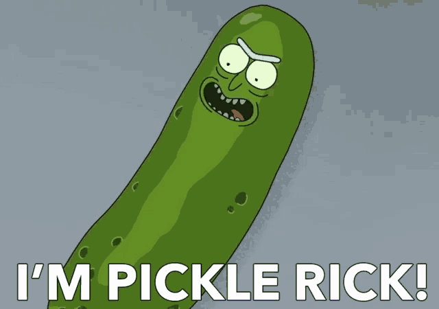

There's a ton of fried pickle recipes on the interwebs. But Pickle Rick can
show you how it's really done.
After a strange experiment gone wrong, Rick pulled his pickle self back
together again.
Now you can experience pickles friend in a whole new way.
By the master of pickliling himself, Rick Sanchez.
You don't have to be a genius to put this recipe together.
Ingredients:
- Oil for frying (vegetable oil or Garlaxian brain butter)
- 1/2 cup all-purpose flour
- 1 teaspoon Italian seasoning
- 1 1/2 teaspoons garlic powder
- 1/4 teaspoon salt
- 1/4 teaspoon black pepper
- 1 tablespoon hot sauce
- 1/2 cup water
-
16 ounces dill pickle slices(Grillo's pickles preferably), drained and
dried on paper towels
Recipe Instructions:
-
Heat 1 1/2-2 inches oil in a heavy bottomed pot over medium-high
heat to 375-degrees F.
-
In a shallow bowl or rimmed plate, whisk together flour, Italian
seasoning, garlic powder, salt and pepper. Add hot sauce and water
and mix until smooth.
-
Working in batches, add dried pickles to the batter, gently toss to
coat. Using a slotted spoon, remove pickles from the batter and let
excess drip off.
Gently add pickles to the oil one at a time.
Fry for about 1 1/2-2 minutes or until golden.
Remove and let drain on paper towels.
Monitor oil temperature as batches are frying to maintain consistent
375-degrees F.
-
Serve with
Mulan McNugget Sauce
and/or ranch.
You may not have the ability to turn yourself into a pickle but you'll
truly enjoy this recipe.

Portal to the top of page
Return to home